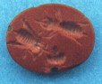

IL
MONDO DELLE APIIL
MONDO DELLE API
IL
MONDO DELLE APIIL
MONDO DELLE APITutta la vita dell'ape si svolge in funzione dell'insieme degli individui, che costituiscono la famiglia, l'alveare. Tutte le attività dell'ape sono finalizzate all'allevamento della covata cioè di nuove api che porteranno avanti il ciclo vitale, per mantenere la famiglia sempre con un numero di insetti sufficiente per svolgere tutti i lavori necessari al sostentamento ed alla propagazione della specie. L'ape nasce da un uovo, deposto dall'unica femmina feconda della famiglia, l'ape regina. E' di colore bianco, allungato e leggermente curvo e viene deposto sul fondo delle cellette del favo. Dopo 3 giorni dall'uovo nasce una piccola larva, che subito viene alimentata dalle api giovani dell'alveare con la pappa reale, chiamata anche latte delle api, prodotta da giandole dell'apparato boccale dell'ape stessa. In pochi giorni la larva si sviluppa aumentando di molte volte il suo peso fino a riempire lo spazio della sua celletta. Quest'ultima viene opercolata dalle api dell'alveare con un impasto morbido di cera e polline, che verrà ritagliato al momento della nascita dalla nuova ape, usando le mandibole. Possono nascere tre tipi diversi di individui:- da un uovo fecondato, l'ape operaia con l'apparato riproduttivo non sviluppato, che rappresenta quasi la totalità degli individui della famiglia, anche decine di migliaia nel periodo estivo;- da un uovo non fecondato, il fuco (maschio), che nel periodo primaverile è presente a centinaia, che ha la funzione di fecondare in volo l'ape regina. Gli spermatozoi sono conservati in un'apposita sacca nell'addome della regina e utilizzati fino al loro esaurimento, anche per 3-5 anni (la durata della vita dell'ape regina);- da un uovo fecondato, un'ape femmina con l'apparato riproduttivo completamente sviluppato, l'ape regina, l'unica in grado di deporre uova fertili.La decisione di far nascere una regina deriva, in situazioni normali, dall'istinto di propagazione della specie, la sciamatura, che avviene generalmente nel periodo primaverile.L'ape vola sul territorio alla ricerca degli alimenti e delle sostanze necessarie al sostentamento della famiglia. E' in grado di ricordare e di dare informazioni alle altre api riguardanti la distanza e la posizione della fonte di cibo. Visita i fiori alla ricerca del nettare che preleva tramite la ligula e lo trasporta all'interno dell'alveare. Qui viene consegnato alle api di casa che lo depositano nei favi, generalmente nella zona superiore alla covata. Questi scambi di cibo da un'ape all'altra arricchiscono il nettare di enzimi, prodotti dalle ghiandole presenti nell'apparato boccale e, dopo vari passaggi, matura diventando miele.
Raccoglie il polline utilizzando apposite spazzole delle zampe posteriori, con le quali pulisce i granuli accumulati sul dorso e lo deposita nelle cestelle. E' l'alimento proteico della covata. Raccoglie la propoli, una sostanza vegetale prodotta da gemme di alcune varietà di alberi, utilizzata come rivestimento di tutte le superfici all'interno dell'alveare, allo scopo di evitare il diffondersi di malattie e batteriosi che la presenza di tanti insetti così a stretto contatto tra loro potrebbero favorire. Le riserve alimentari serviranno nel periodo invernale per il sostentamento ed il riscaldamento dell'alveare. Le api non vanno in letargo, ma rimangono sempre attive raggruppandosi al centro dei favi, in glomere. Producono calore comprimendo i muscoli del torace, utilizzando l'energia fornita dal miele.
|
 |
© Ferdinando Marinelli